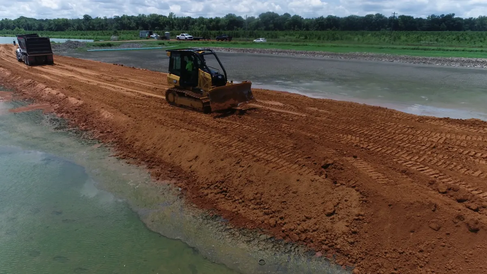
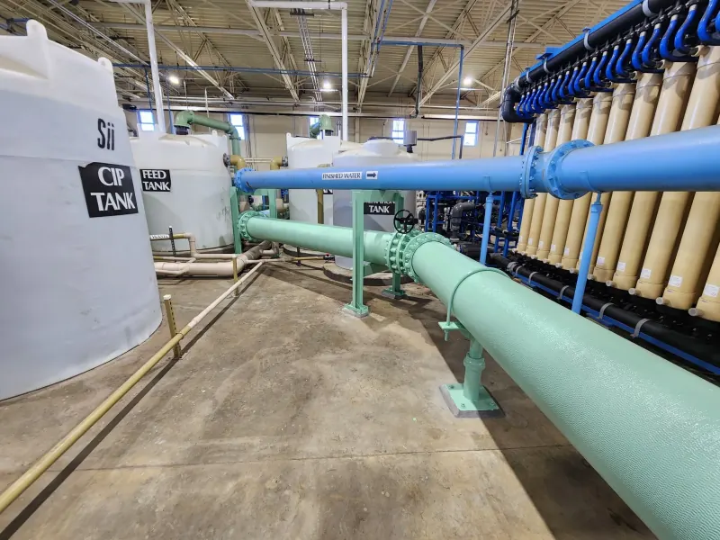
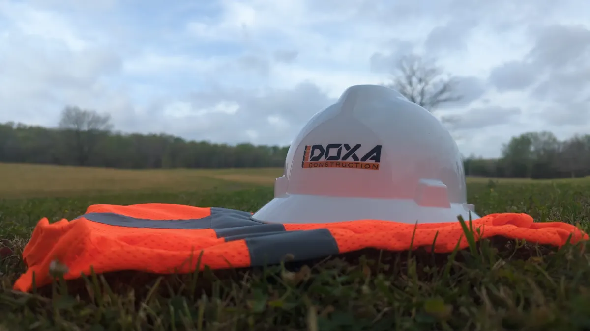
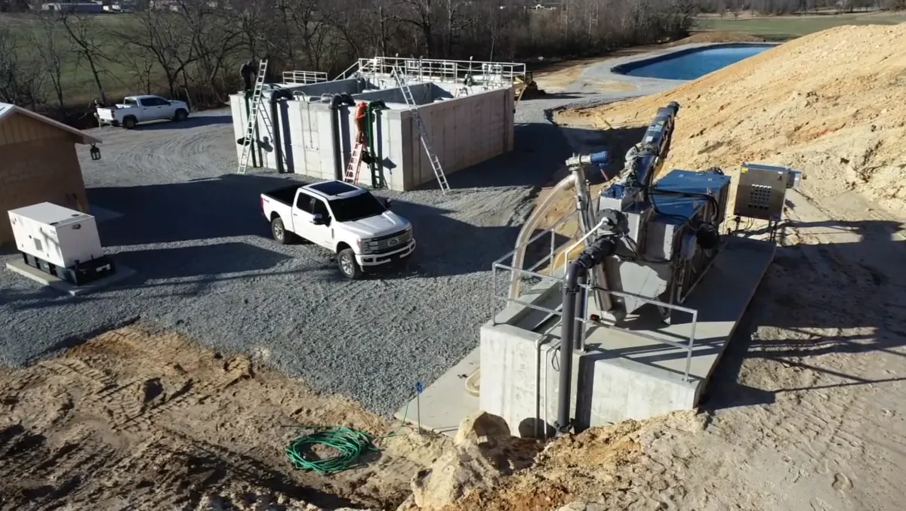

Building
Since 2015
Our WorkLocal to central Arkansas and serving the community for over ten years, we specialize in the development of water and wastewater infrastructure, leveraging decades of collected expertise to consistently deliver exceptional results.

Local to central Arkansas and serving the community for over ten years, we specialize in the development of water and wastewater infrastructure, leveraging decades of collected expertise to consistently deliver exceptional results.

Safety is built into every phase of our projects, from pre-construction planning to final walkthroughs. Whatever the job, Doxa maintains a strong safety culture across every jobsite.
We're always looking for skilled, safety-minded professionals to join the team. If you take pride in your work and want to build lasting experience while constructing some of Arkansas's most resilient infrastructure, we want to hear from you.
Careers